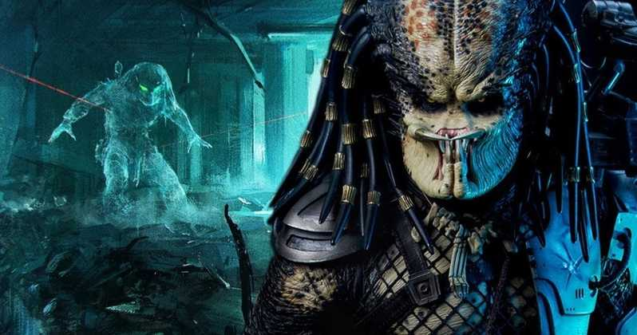

The "hunter" becoming the "hunted". The Predator (also known as Yautja or Hish-Qu-Ten) is a fictional extraterrestrial species known for the trophy hunting of other species for sport.

A Predator ship crash-lands on Earth. Army Ranger sniper Quinn McKenna and his team are attacked by the Predator on a hostage retrieval mission. McKenna incapacitates the Predator and has parts of its armor mailed off to prove the existence of extraterrestrial life. At the behest of government agent Will Traeger, he is captured and held for examination. Traeger also takes the Predator to a lab for experimentation and observation, recruiting evolutionary biologist Casey Bracket to study it. The Predator awakes, breaks out of its bonds, kills lab workers, but spares Bracket before leaving.
This species is highly advanced. The band worn on its arm seems to be some sort of control device for the ship as well as all the tools the predator uses to catch its prey
"
Its a bird, its a plane, no it's the Predator.
You really can't run from this thing, it's impossible.
The Predator is known to stand more than seven feet tall.
He bleeds luminescent green blood, which was actually glow stick juice. haha
He also has the ability to make himself invisible at will.
The Predator is my favorite Character because.
It detects it's prey with high grade thermal technology.
Is a brutal creature with superhuman strength and the ability to disappear into its surroundings.
It has advanced plasma weaponary from another planet.
Arnold starred in this original film in 1987
His weapon of choice against the predator was the M16 A4 with grenade attachment.
He was 40 years of age at the time of this film.
My mother absolutely loves this character due to the fact that it has dreadlocks as a hairstyle.
The team discovers the wreckage of a helicopter and three skinned corpse.
After capturing Anna, a guerrilla, the team proceeds to their extraction point, unaware that they are being tracked with thermal imaging by an unseen observer. Anna escapes and is chased by Hawkins, but they are ambushed by the creature. It spares Anna but kills Hawkins and drags his body away. Dutch organizes a manhunt, during which Blain is killed by the creature's plasma weapon. Enraged, Mac initiates a firefight in which the creature is wounded, revealing luminescent green blood.
The unit regroups and realizes that something in the jungle is stalking them. Dillon believes more guerrillas are responsible, but Billy is adamant that the perpetrator is not human, an assertion that is met with skepticism. The team makes camp for the night, setting traps in all directions.
That night the traps are set off, and Mac kills a wild pig, mistaking it for the creature. In the confusion, the creature steals Blain's body and Dutch realizes that their enemy uses the trees to travel, stalking them like a predator. An attempt to trap the creature fails, leaving Poncho injured. Mac and Dillon pursue the alien, but it outmaneuvers and kills them. The creature catches up with the others, killing Billy and Poncho and wounding Dutch. Realizing the creature does not target unarmed prey because there is "no sport", Dutch sends Anna to the helicopter unarmed. The creature pursues Dutch into a river and its cloaking device malfunctions. The creature, now visible, gets within a few feet of a mud-covered Dutch. His thermal signature reduced, Dutch remains unseen by the creature and it moves on. Dutch realizes he can use mud as camouflage.
While the creature collects trophies from the bodies, Dutch crafts traps and weapons and lures the creature out with a war cry and fire. Dutch disables the creature's cloaking device and inflicts minor injuries but becomes cornered. Acknowledging Dutch as a worthy foe, the creature discards its mask and plasma weapon and engages him in hand-to-hand combat. Dutch is almost beaten, but manages to crush the creature under a trap's counterweight. As the creature lies dying, it activates a self-destruct device while laughing maniacally. Dutch takes cover just before the device explodes, resulting in a mushroom cloud. He is picked up by his commander and Anna in the helicopter.
 "
"